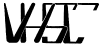

VHSC:
Very High Speed Club
is a QRQ club for
friends of CW speeds of at least 40 wpm.
General Information (Source: VHSC web site)
The Radio Telegraphy Very High Speed Club VHSC was founded on May 1st 1961 under protection of VERON and DARC and has the intention to gather radio amateurs who are able to transmit and to copy very high speed telegraphy, and doing so, to encourage CW-Traffic in general and QRQ-Traffic in particular.
How to join the VHSC
Be active on the bands, using telegraphy speed of 40 wpm or higher, and show your ability to read and key this speed perfectly. VHSC-Members may give you a recommendation for the VHSC-Membership. Do not ask for a recommendation, do not chase for it! Just show your capability of solid copy and excellent keying at a speed of at least 40 wpm! A recommendation can be made after having 2-way-CW contact -- with a VHSC-Member -- for at least 30 minutes using telegraphy speed of 200 letters per minute or higher. (PARIS-base, 40 wpm). Solid copy should be made by the applicant together with excellent keying. No keyboards or decoders are allowed during these contacts. A recommendation is valid for maximum 3 years. After having 4 recommendations in your possession, send then with your application for VHSC-Membership and EUR 10 to the VHSC-Secretary. The call of a VHSC-candidate will be published in our VHSC-bulletin, this is a news sheet which is sent to all members. If there are no objections raised by VHSC members within 3 months the VHSC-candidate can be registered as a VHSC-member.
All recommendations must show the duration of the VHSC-test-QSO and must mention the CW-speed used during that VHSC-test-QSO. All applications should contain statement, that the applicant did not used a keyboard or decoder during the four (4) test-QSOs. A certificate of membership is sent to members. There is no further payment for life membership. Applications should be addressed to the secretary of the VHSC:
PG4I Joop Stakenborg
Annie Romein-Verschoorpad 1
4103VE Culemborg
The Netherlands
E-mail...joop.pg4i (at-symbol) gmail.com...